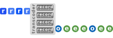

the
EDXML Software Development Kit
It is recommended to read the introduction to EDXML first, in case you have not done so yet.
Getting Started
The SDK is written in Python and can be installed using pip:
The documentation of the SDK can be found at readthedocs.org. The commandline utilities that are part of the SDK demonstrate various use cases. Experimenting with the source code of these utilities is a nice way to get familiar with the APIs.
Note that the SDK and the documentation assume basic knowledge the EDXML specification.
Transcoders
Transcoders are software components that parse data records from some data source and transform them into EDXML events. Transcoders are designed to be shared and combined to correlate the information produced by multiple transcoders.
The SDK contains a generic base implementation that you can extend to create a transcoder for a specific type of input data.Transcoding complex data sources can be simplified by splitting the transcoder in multiple record transcoders while the SDK takes care of routing input records to the correct record transcoder.
The above graphic illustrates the process. Data records enter from the left. The transcoder implementation of the SDK routes the records to the record transcoders. The resulting ontology and event data is output at the right.
The SDK contains a test harness to ease writing unit tests for your transcoders.
Performance
Built on the excellent lxml library, the SDK shows decent performance. Generating data can be done at speeds of up to 10,000 events per second, parsing speeds can reach about 19,000 events per second. Both of these figures are measured using a single thread at an Intel(R) Core(TM) i7-4600U CPU.
Copyright © The EDXML Foundation